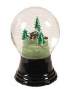

Every year, by some estimates, about 10,000 dogs and cats are victims
of accidental poisoning by automobile antifreeze. A pet does not have to
drink a lot of antifreeze to be poisoned. Most brands of commercial
antifreeze consist of 95 percent ethylene glycol, an extremely toxic
chemical. Even a few licks of this sweet-tasting liquid can be fatal to a
cat or dog. (Ethylene- glycol-based antifreeze is also extremely hazardous
to children. A few ounces are lethal.) For a medium sized dog, ingestion
of about 2 ounces (3-4 tablespoons ) is toxic. For cats, as little as 1/4
of an ounce (1-2 teaspoons) can be lethal. Antifreeze poisoning commonly
occurs in spring and fall when car owners replace the old antifreeze with
fresh antifreeze in their car radiators. However, poisoning can happen
anytime, particularly when a car boils over or when a hose leaks,
releasing the antifreeze. As mentioned above, this poisoning happens often
to animals who are allowed to roam freely in their neighborhoods, but
another high risk group are those dogs who are confined in garages and who
may not always be provided with adequate fresh drinking water. These dogs
may gain access to improperly or inadequately stored antifreeze or lick
spilled or leaked antifreeze off the garage floor. If it is necessary to
confine your pet(s) to your garage, make sure antifreeze containers are
well secured and your animal has plenty of fresh water.
Another source of antifreeze are the decorative "snow globes"
glassware. The liquid in the these displays contain2% antifreeze and are
very toxic..I recently received of call of a young cat poisoned when
ingesting some of the liquid froma shattered "snow globe".
Both cats and dog are attracted to the smell and taste of ethylene
glycol. Therefore, when you or a member of your household changes
antifreeze in the driveway, be sure to collect all of the waste coolant
and properly dispose of it. And never leave a bucket of ethylene-glycol
coolant unattended - even for a moment. Also remember that your car can
leak coolant at any time. If you see a puddle of greenish-colored liquid
in your driveway, flush the area with plenty of water and dont delay
locating and fixing the leak. Another method of quick clean-up is to
spread cat litter on the spill, clean up with rags (which are bagged
immediately) and then rinse. Antifreeze will biodegrade in the
environment, but it takes weeks or months to do so, so removing the spill
is absolutely essential.
Antifreeze poisoning occurs in two stages: In the first stage, the
ethylene glycol in the antifreeze causes a drunken appearance in the
animal within about 30 minutes which may continue for several hours. After
passing through stage 1, the animal appears to recover. Stage 2 begins
when the dogs liver begins metabolizing the ethylene glycol, changing it
into more toxic substances. Within 12 to 36 hours of ingestion, these
metabolites have reached such a level that the dogs kidneys stop
functioning, and the animal slips into a coma.
Getting the dog to a veterinarian is critical within the first 9-12
hours following ingestion. After that length of time, the liver will have
already begun metabolizing the ethylene glycol into substances that cause
kidney failure and ultimately death.I have been asked the question by
several people-What should be done immediately care for my pet.Should I
induce vomiting or give activated charcoal to my pet?These are very short
term fixes and not a cure.The faster your pet is treated by a veterinarian
the better the chances of recovery.Again, this poison is extremely toxic.
Another source of help is the National Poison Control Center,
800-548-2423. This call will cost $30.
Symptoms of antifreeze poisoning include a drunken appearance including
staggering, lack of coordination, and apparent disorientation and
vomiting. The animal may appear listless and depressed. Because early
signs of antifreeze poisoning often mimic signs of other illness, neither
you or your veterinarian may suspect antifreeze poisoning until it is too
late. Fortunately, in house lab tests performed by your veterinarian by
assist in the diagnosis of antifreeze toxicity.
In our practice we had a tragic incident involving two pets. One dog
ingested antifreeze and then vomited the product. The other dog then
licked up the vomit and also developed the toxicity. By the time the owner
recognized the seriousness of the situation, it was too late and both pets
died. We also had a situation involving a household of three cats. The
same situation occurred. But, fortunately, the owner recognized the
problem and we were able to save two of the three pets. As, you can see,
this is truly a horrible and tragic poison.

December, 2003